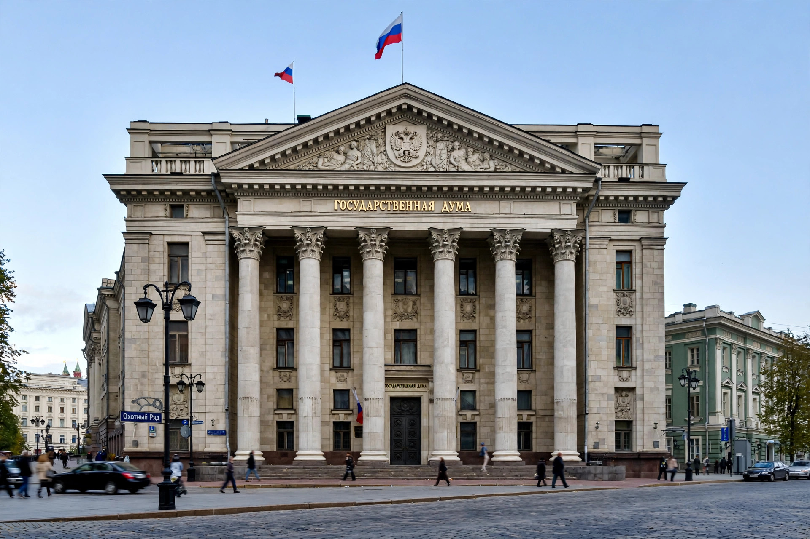

| Federal Assembly Федеральное Собрание | |
| Type | Bicameral parliament |
|---|---|
| Upper house | Federation Council |
| Lower house | State Duma (450 deputies) |
| Established | 12 December 1993 (Constitution of Russia) |
| Meeting place | Moscow |
The Federal Assembly (Russian: Федеральное Собрание, Federalnoye Sobraniye) is the national legislature of the Russian Federation, established by the Constitution of 1993. It is a permanently functioning, bicameral parliament consisting of two chambers: the Federation Council, which represents the federal subjects, and the State Duma, which is directly elected.
The State Duma has 450 deputies elected for five-year terms, half by proportional representation from party lists and half in single-member districts (a mixed system restored for the 2016 election after a period of full proportional representation). The Federation Council consists of two representatives from each federal subject of Russia. The two chambers sit separately: the State Duma on Okhotny Ryad near the Kremlin, and the Federation Council on Bolshaya Dmitrovka Street.
Federal laws are adopted by the State Duma and, with some exceptions, must be approved by the Federation Council before being signed and promulgated by the President, who may veto them; a veto can be overridden by a two-thirds majority in both chambers. The State Duma consents to the appointment of the Prime Minister, hears the Government's annual reports, and may express no confidence in the Government. The Federation Council's exclusive competences include approving changes to internal borders, decrees on martial law and states of emergency, decisions on the use of the armed forces abroad, and the appointment of senior judges. Amendments to most chapters of the Constitution require approval by three-quarters of the Federation Council and two-thirds of the State Duma.